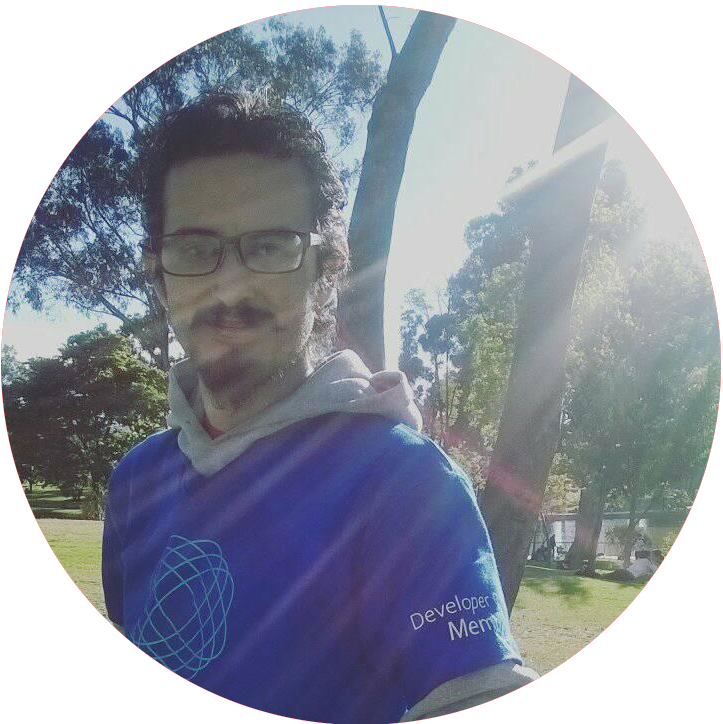

¿Quién es este tipo?
Mi nombre es David Latorre nacido un Jueves de Septiembre de 1990, en Bogotá, Colombia. Siempre inquieto y curioso por naturaleza desarmaba cuanta cosa estuviera a mi alcance para ver como funcionaba, de madre por aquellos días estudiante universitaria y padre conductor de diversos medios de transporte que en sus ratos libres curioseaba con la electrónica, desde pequeño tuve acceso a una commodore 64 ensamblada en Argentina y un pc clon de arquitectura i486 con ms-dos, las interfaces gráficas no era algo común para mí pero aun así me daba la maña para jugar, intercambiar disquetes, abir editores de texto con solo comandos, mi madre finalizó sus estudios y me llenó de lujos materiales, pero vivía atada a un escritorio con horario de esclavo, mi padre nunca se hizo cargo de mí más allá de darme el apellido y venir a saludar de vez en cuando, mis “padres reales” fueron mis abuelos maternos a quienes debo esta vida y la otra.
Mi familia era sobreprotectora por lo que nunca tuve contacto con personas de mi edad más allá de la jornada escolar, nada de clubes extra curriculares o salir a la calle, mi única compañia en esos días, la TV y los libros gracias a que mis abuelos eran muy creyentes del valor del conocimiento adquirieron diversos libros de muchas temáticas, enciclopedias completas, preferían regalar un libro en vez de un juguete la mayoría de veces, cosa que agradezco, hoy en día en casa hay tantos libros (Incluidos los que me han legado ellos) que muchos están en pilas sobre el piso ya que los varios estantes no dieron más abasto. así que fui cultivandome con dibujos animados orientales a la par que libros de diversa temática y complejidad como única compañía.
Siempre perverso para cualquier actividad física que necesitara coordinación, fui víctima de bullying (únicamente verbal) por ser de los pocos escolares con nula habilidad para el football, habilidad imprescindible para triunfar (socialmente) en el colegio, me . enfrascaba en los computadores y diversas máquinas, creo que he llevado lo del estereotipo de nerd al pie de la letra, a día de hoy tengo un especial desprecio hacia el football aun.
Fascinado con la llegada de la TV por cable a mi hogar y con dos canales, Canal 5 de México y Locomotion de Argentina lo que me hizo tener mucha afinidad por Japón y el ánime al punto que aprendí a dibujar siguiendo métodos similares a los académicos desarrollando un buen nivel con el tiempo, al finalizar el colegio y previamente tomado clases de guitarra con un ex miembro de la orquesta filarmónica de Bogotá puse en práctica esa habilidad lo que consiguió mi triunfo social, por lo que decidí olvidarme del dibujo, japón y las máquinas para estudiar música como carrera.
embargo fue una mala decisión ya que el gusto por ese mundo “nerd” nunca se fue y me veía más horas dibujando, diseñando juegos, aprendiendo japonés, etc, que estudiando lo de mi carrera ya que por fin tenía un equipo de computo modesto y una conexión a internet propia lo que inevitablemente llevó a mi fracaso como músico, aunque conservo toda la teoría académica fresca aun hoy en día y mis habilidades instrumentales de nivel medio-bajo intactas.
Terminé en la universidad Minuto de Dios estudiando licenciatura en Arte, tomé de allí el amor por la enseñanza docente en entornos socialmente críticos a la vez que reflexionaba cada vez más sobre las desigualdades del mundo ya que la carrera de un modo u otro nos hacía consciente de ellas por el enfoque de la facultad de educación.
Allí mismo conocí el soft libre y algo llamado “Linux” por primera vez, indagando los porqués y su funcionamiento encontré la filosofía de GNU (El otro componte del SO GNU/Linux) era afín con mi manera de ver el mundo, empecé a experimentar con Linux Mint, y en poco tiempo me ví usándolo como único sistema operativo en mi vida.
Llegué a profundizar en el sistema a tal punto que en mi primera experiencia laboral la cual fue como docente de arte, me veía muchas veces ejerciendo más como asesor tecnológico que como maestro entre compañeros y estudiantes, después de ello decidí que no iba a huir más de “mi destino” con la informática y gracias a mis habilidades en Linux conseguí acceder a empresas de soporte técnico empresarial presencial nivel 1enfocados en Windows para users y Linux para telefonía ip y data centers, así me mantuve, me gradué de mi carrera de arte (que nunca más volví a ejercer), me casé, tuve una hija, etc; hasta llegar a la Universidad Antonio Nariño en el mismo cargo, soporte técnico, allí alguna vez solicitaron la sala de préstamo libre de equipos que administraba para dar clase de introducción a la programación, por lo que naturalmente estaba allí mientras la impartían, lo que despertó en mí curiosidad de saber que era eso de programar, así mismo pr la cercanía de mi trabajo a la casa decidí comprar una bicicleta, ahí descubrí un talento deportivo oculto, el ciclismo con énfasis en ciclismo urbano el cual sigo cultivando activamente hoy en día, es muy poco el uso que le doy al transporte público, no importa que tan lejos sea.
Aprendí de sitios Online de desarrollo FrontEnd, Backend, Python, Javascript, Ruby, etc. Se había despertado en mí una fuerte pasión que desconocía, era como tener súper poderes, sumado a las habilidades en Linux que ya tenía lo cual en conjunto me potenció muchísimo en mi conocimiento tecnológico y mis habilidades en general, descubrí que en mi ciudad había una comunidad enorme de Linux y que fue donde nació FLISOL, me uní a ellos por medio de un curso que impartieron y en el cual tuve “grado honorífico” hoy en día hago parte activa de la comunidad, apoyo en la organización de eventos relacionados, asisto a reuniones para hablar de soft libre con el gobierno, etc.
Así mismo decidí dejar de dedicarme a hacer soporte técnico ya que lo que quería en verdad era desarrollar, hacer otro tipo de arte, el de crear cosas desde cero con código, el único límite era la imaginación, era como hacer magia, era poder controlarlo todo inclusive a nivel físico gracias a que ya tenía conocimientos vagos de electrónica heredados de mis furtivas coladas al taller electrónico de mi padre cuando podía y el estaba en sus trabajo, estudiando sobre las posibilidades de la programación di con la domótica; ahí descubrí Arduino y Raspberry, fue un mundo totalmente nuevo y revolucionario.
Renuncié a mi empleo de último empleo de soporte técnico y me dediqué a unirme a comunidades, conocer el entorno Tech y de Startups, hoy en día hago parte de algunas como el círculo de desarrolladores de Facebook o la propia comunidad Linux, ya he trabajado en pequeños proyectos como desarrollador, tengo servidores caseros, trabajo íntegramente con GNU/Linux en mi día a día, específicamente con la distribución Arch Linux, al final, sigo ejerciendo el arte “tradicional” como ilustrador enfocado en cultura pop y lo combino con tecnología.
Al final siempre estuvo ahí, ese pequeño nerd curioso por todo, enfrascado en computadores, tomos de libros enormes y juegos de rol, por más que quise variarlo, nunca pude deshacerme de eso, es mi esencia :)